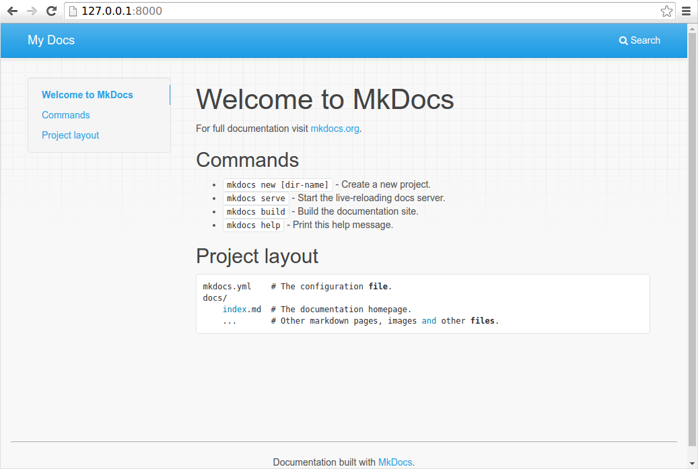

MkDocs
Project documentation with Markdown.
Overview
MkDocs is a fast, simple and downright gorgeous static site generator that's geared towards building project documentation. Documentation source files are written in Markdown, and configured with a single YAML configuration file. Start by reading the introduction below, then check the User Guide for more info.
Host anywhere
MkDocs builds completely static HTML sites that you can host on GitHub pages, Amazon S3, or anywhere else you choose.
Great themes available
There's a stack of good looking themes available for MkDocs. Choose between the built in themes: mkdocs and readthedocs, select one of the 3rd party themes listed on the MkDocs Themes wiki page, or build your own.
Preview your site as you work
The built-in dev-server allows you to preview your documentation as you're writing it. It will even auto-reload and refresh your browser whenever you save your changes.
Easy to customize
Get your project documentation looking just the way you want it by customizing the theme and/or installing some plugins.
Installation
Install with a Package Manager
If you have and use a package manager (such as apt-get, dnf, homebrew, yum, chocolatey, etc.) to install packages on your system, then you may want to search for a "MkDocs" package and, if a recent version is available, install it with your package manager (check your system's documentation for details). That's it, you're done! Skip down to Getting Started.
If your package manager does not have a recent "MkDocs" package, you can still use your package manager to install "Python" and "pip". Then you can use pip to install MkDocs.
Manual Installation
In order to manually install MkDocs you'll need Python installed on your system, as well as the Python package manager, pip. You can check if you have these already installed from the command line:
$ python --version
Python 3.8.2
$ pip --version
pip 20.0.2 from /usr/local/lib/python3.8/site-packages/pip (python 3.8)
MkDocs supports Python versions 3.5, 3.6, 3.7, 3.8, and pypy3.
Installing Python
Install Python by downloading an installer appropriate for your system from python.org and running it.
Note
If you are installing Python on Windows, be sure to check the box to have Python added to your PATH if the installer offers such an option (it's normally off by default).

Installing pip
If you're using a recent version of Python, the Python package manager, pip, is most likely installed by default. However, you may need to upgrade pip to the lasted version:
pip install --upgrade pip
If you need to install pip for the first time, download get-pip.py. Then run the following command to install it:
python get-pip.py
Installing MkDocs
Install the mkdocs package using pip:
pip install mkdocs
You should now have the mkdocs command installed on your system. Run mkdocs
--version to check that everything worked okay.
$ mkdocs --version
mkdocs, version 0.15.3
Note
If you would like manpages installed for MkDocs, the click-man tool can generate and install them for you. Simply run the following two commands:
pip install click-man
click-man --target path/to/man/pages mkdocs
See the click-man documentation for an explanation of why manpages are not automatically generated and installed by pip.
Note
If you are using Windows, some of the above commands may not work out-of-the-box.
A quick solution may be to preface every Python command with python -m
like this:
python -m pip install mkdocs
python -m mkdocs
For a more permanent solution, you may need to edit your PATH environment
variable to include the Scripts directory of your Python installation.
Recent versions of Python include a script to do this for you. Navigate to
your Python installation directory (for example C:\Python38\), open the
Tools, then Scripts folder, and run the win_add2path.py file by double
clicking on it. Alternatively, you can download the script and run it
(python win_add2path.py).
Getting Started
Getting started is super easy.
mkdocs new my-project
cd my-project
Take a moment to review the initial project that has been created for you.

There's a single configuration file named mkdocs.yml, and a folder named
docs that will contain your documentation source files (docs is
the default value for the docs_dir configuration setting). Right now the docs
folder just contains a single documentation page, named index.md.
MkDocs comes with a built-in dev-server that lets you preview your documentation
as you work on it. Make sure you're in the same directory as the mkdocs.yml
configuration file, and then start the server by running the mkdocs serve
command:
$ mkdocs serve
INFO - Building documentation...
INFO - Cleaning site directory
[I 160402 15:50:43 server:271] Serving on http://127.0.0.1:8000
[I 160402 15:50:43 handlers:58] Start watching changes
[I 160402 15:50:43 handlers:60] Start detecting changes
Open up http://127.0.0.1:8000/ in your browser, and you'll see the default
home page being displayed:

The dev-server also supports auto-reloading, and will rebuild your documentation whenever anything in the configuration file, documentation directory, or theme directory changes.
Open the docs/index.md document in your text editor of choice, change the
initial heading to MkLorum, and save your changes. Your browser will
auto-reload and you should see your updated documentation immediately.
Now try editing the configuration file: mkdocs.yml. Change the
site_name setting to MkLorum and save the file.
site_name: MkLorum
Your browser should immediately reload, and you'll see your new site name take effect.

Adding pages
Now add a second page to your documentation:
curl 'https://jaspervdj.be/lorem-markdownum/markdown.txt' > docs/about.md
As our documentation site will include some navigation headers, you may want to
edit the configuration file and add some information about the order, title, and
nesting of each page in the navigation header by adding a nav
setting:
site_name: MkLorum
nav:
- Home: index.md
- About: about.md
Save your changes and you'll now see a navigation bar with Home and About
items on the left as well as Search, Previous, and Next items on the
right.

Try the menu items and navigate back and forth between pages. Then click on
Search. A search dialog will appear, allowing you to search for any text on
any page. Notice that the search results include every occurrence of the search
term on the site and links directly to the section of the page in which the
search term appears. You get all of that with no effort or configuration on your
part!

Theming our documentation
Now change the configuration file to alter how the documentation is displayed by
changing the theme. Edit the mkdocs.yml file and add a theme setting:
site_name: MkLorum
nav:
- Home: index.md
- About: about.md
theme: readthedocs
Save your changes, and you'll see the ReadTheDocs theme being used.

Changing the Favicon Icon
By default, MkDocs uses the MkDocs favicon icon. To use a different icon, create
an img subdirectory in the docs directory and copy your custom favicon.ico
file to that directory. MkDocs will automatically detect and use that file as your
favicon icon.
Building the site
That's looking good. You're ready to deploy the first pass of your MkLorum
documentation. First build the documentation:
mkdocs build
This will create a new directory, named site. Take a look inside the
directory:
$ ls site
about fonts index.html license search.html
css img js mkdocs sitemap.xml
Notice that your source documentation has been output as two HTML files named
index.html and about/index.html. You also have various other media that's
been copied into the site directory as part of the documentation theme. You
even have a sitemap.xml file and mkdocs/search_index.json.
If you're using source code control such as git you probably don't want to
check your documentation builds into the repository. Add a line containing
site/ to your .gitignore file.
echo "site/" >> .gitignore
If you're using another source code control tool you'll want to check its documentation on how to ignore specific directories.
After some time, files may be removed from the documentation but they will still
reside in the site directory. To remove those stale files, just run mkdocs
with the --clean switch.
mkdocs build --clean
Other Commands and Options
There are various other commands and options available. For a complete list of
commands, use the --help flag:
mkdocs --help
To view a list of options available on a given command, use the --help flag
with that command. For example, to get a list of all options available for the
build command run the following:
mkdocs build --help
Deploying
The documentation site that you just built only uses static files so you'll be
able to host it from pretty much anywhere. Simply upload the contents of the
entire site directory to wherever you're hosting your website from and
you're done. For specific instructions on a number of common hosts, see the
Deploying your Docs page.
Getting help
To get help with MkDocs, please use the discussion group, GitHub issues or
the MkDocs IRC channel #mkdocs on freenode.